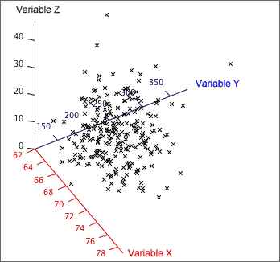

3-dimensional scatterplots
The most direct way to extend a standard scatterplot of two variables, X and Y, to include a third variable, Z, is to add a third dimension to become an axis for Z. Each individual would be represented by a cross in a 3-dimensional cube.

Although a computer screen is only 2-dimensional, it can display a projection of such a 3-dimensional scatterplot. Rotating such a display with the mouse gives a good feel for the shape of the underlying 3-dimensional scatter of points. This is a dynamic display that is only effective on a computer — the information in the display is conveyed by movement. On paper, we can only present information in two dimensions.
Three-dimensional scatterplots are an interesting (and occasionally useful) way to display data. They are however much overrated as an analysis technique and simpler displays are usually more effective for extracting information from multivariate data.